SDL2 and OpenGL
Cross
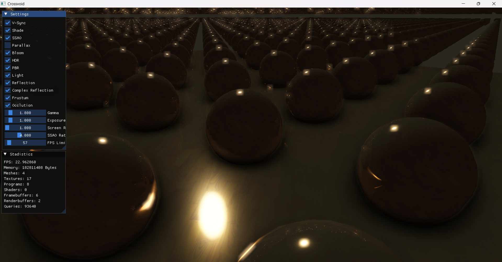
3D Graphics Engine for real time simulations.
Shaders are used for lighting.
And octrees are used to divide the space.
Working on a Cascaded Shadow Map implementation
Shaders are used for lighting.
And octrees are used to divide the space.
Working on a Cascaded Shadow Map implementation
Mandelbrot Set
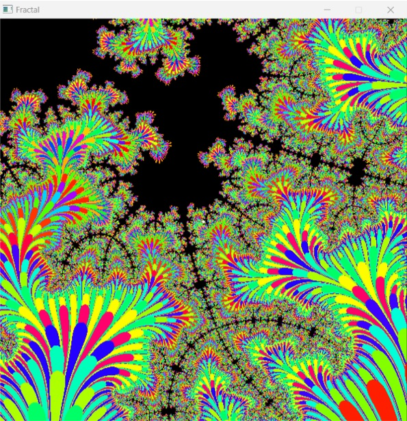
Program that renders a known fractal in real time.
It uses shaders for parallel computing.
It uses shaders for parallel computing.
Falcon

Falcon is a program that analyzes a region of the screen to execute a macro.
It's like a FNF bot.
This program uses shaders for parallel computing.
This program uses shaders for parallel computing.
Desktop

It records the screen.
First it displays the desktop in a window and then it uses the Xbox Game Bar to record.
First it displays the desktop in a window and then it uses the Xbox Game Bar to record.
Programs
Web Server
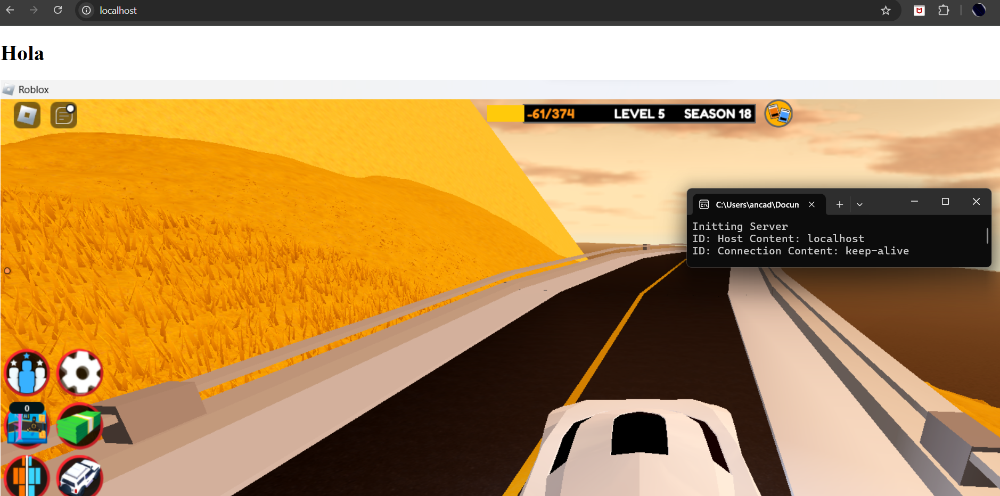
Simple Web Server.
It can handle text and images.
It uses the SDL network library.
It can handle text and images.
It uses the SDL network library.
Brainfuck

Brainfuck Programming Language Interpreter
Pure c++.
Useless program
Pure c++.
Useless program
Enigma

Text and image encryption
Also pure c++.
I'm working on a function that allows you to use a file as a key.
Also pure c++.
I'm working on a function that allows you to use a file as a key.
CPro
This program manages the compilation and linking process of c and c++ projects.
It's pretty basic but useful for beginners.
It's pretty basic but useful for beginners.
WxWidgets
Rabbit
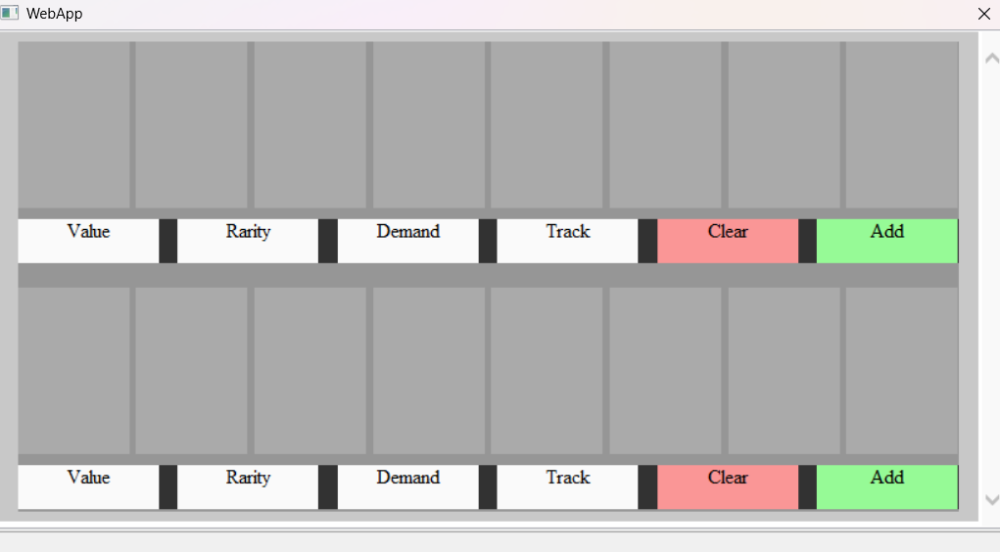
Rabbit is a program that allows you to create programs from Web Apps.
It uses the Internet Explorer Engine in order to load HTML, CSS and JS.
I'm changing to WebView 2 from the Microsoft Edge browser
It uses the Internet Explorer Engine in order to load HTML, CSS and JS.
I'm changing to WebView 2 from the Microsoft Edge browser
Media
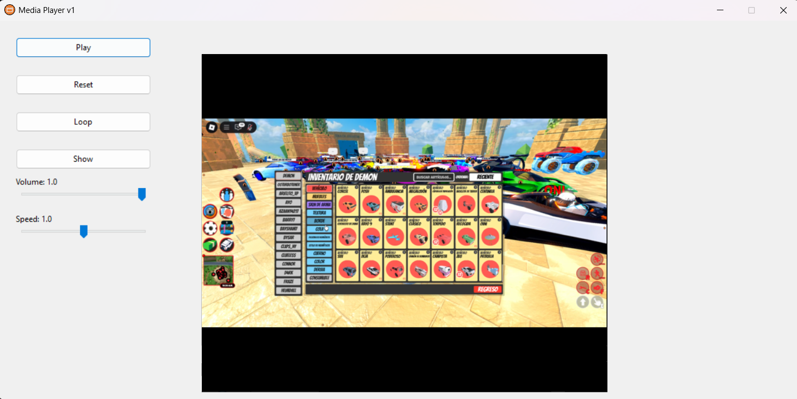
Media is a simple program that lets you to play multimedia files.
It uses the windows multimedia tool to load images, videos, audios, etc.
Win32 API
Zirlon
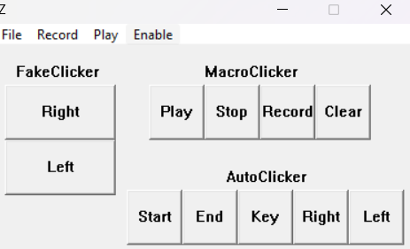
This program lets you record the keyboard and mouse input for playback.
It also allows you to save and load that recordings for later use.
Finally, it has a built-in autoclicker.
It also allows you to save and load that recordings for later use.
Finally, it has a built-in autoclicker.
Kamaron
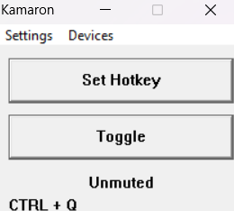
Program that allows you to configure a keybind to mute and unmute the microphone.
Useful for games with voice chat.
Useful for games with voice chat.
WebGL
Mandelbrot Set Web Site
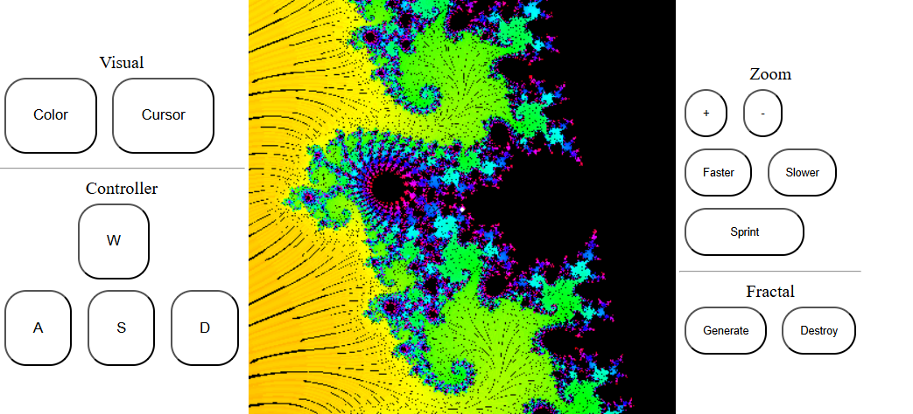
On this web site, you can interact with a fractal in real time.
Similar to the c++ version, but optimized in a web page
It was designed for mobile devices.
Open
Similar to the c++ version, but optimized in a web page
It was designed for mobile devices.
Open
Cono
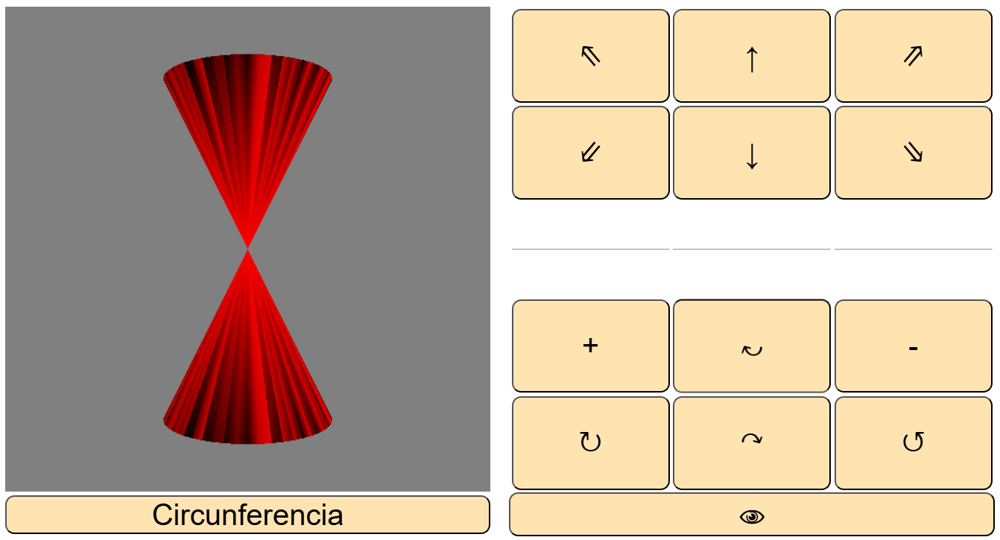Roblox
The Hunter
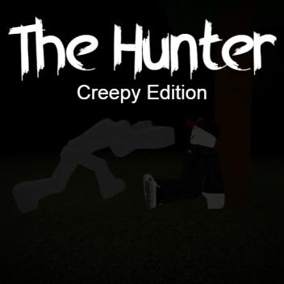
The Hunter is an horror game in which you find yourself in a hidden spót to avoid any hostile entity.
This is an old game (2020) so it has a lot of bugs due to changes to the roblox engine.
Play
This is an old game (2020) so it has a lot of bugs due to changes to the roblox engine.
Play
Relax Obby
This Obby is super relaxing. 40 stages to complete.
Play
Play
Overseer
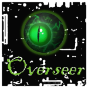
Protect and defend the electronic device from any sort of virus or malware.
Play
Play
Voxel Engine
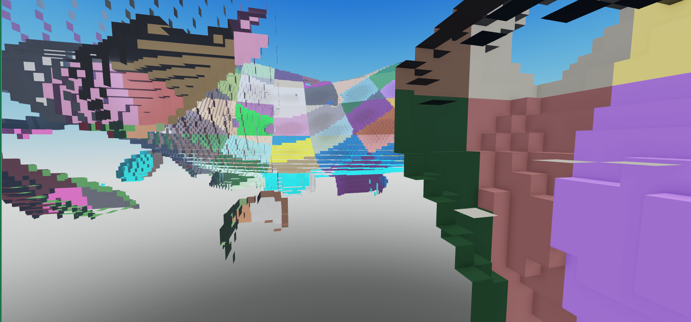
Roblox Voxel Engine
3D Modeling and Renders
Donut
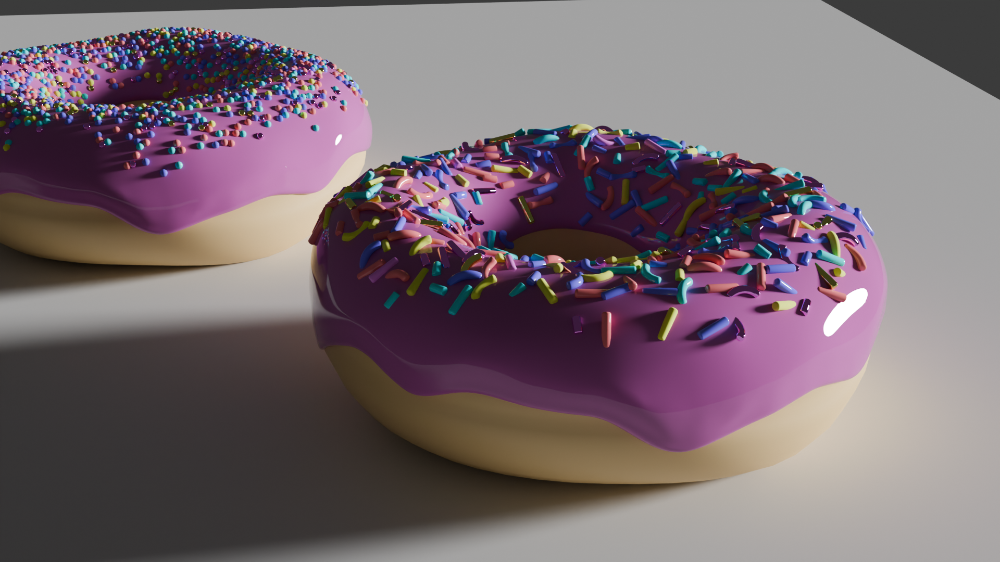
I followed the donut tutorial.
I should watch it again.
I should watch it again.
Eye
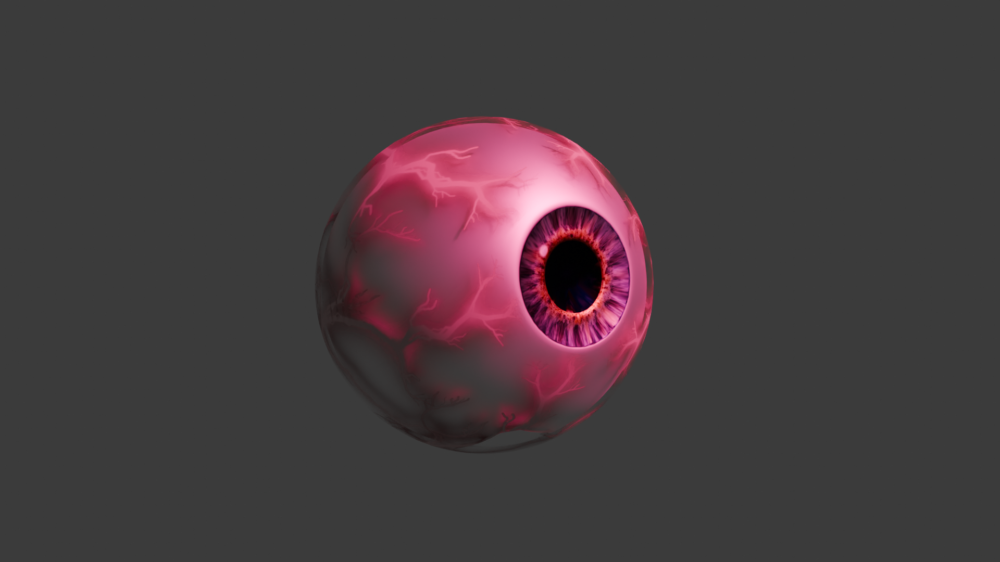
Just a simple eye.
He is watching us.
He just stopped doing it after seeing your internet history.
He is watching us.
He just stopped doing it after seeing your internet history.
Blood Stream
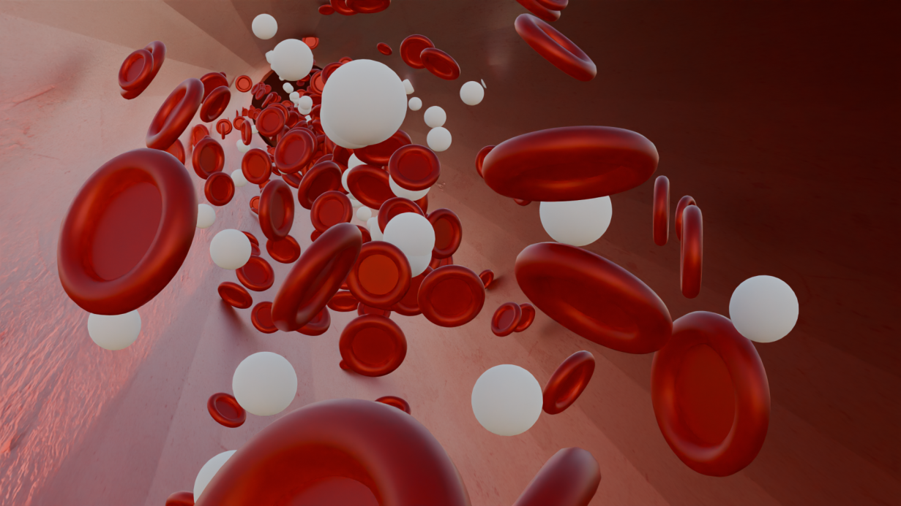
For a biology project. And it wasn't even about blood.
How did i get to this point?
How did i get to this point?
Forest
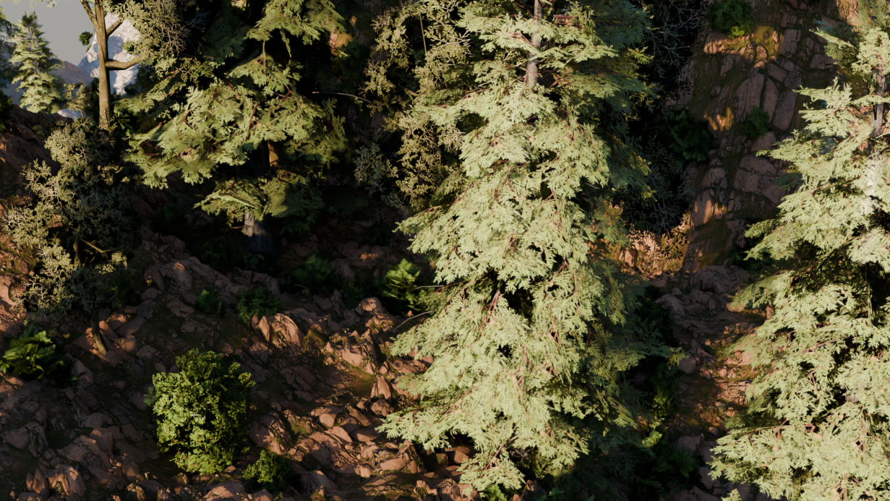
Forest Render. What i can say?
Nature, trees, dirt, rocks.
Is this a god's will telling me to touch grass?
Just kidding, I do it every day.
Nature, trees, dirt, rocks.
Is this a god's will telling me to touch grass?
Just kidding, I do it every day.
Hugo
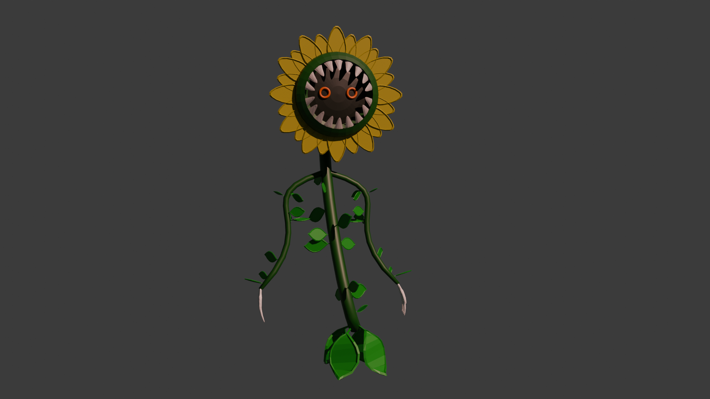
He is awesome
Too much AURA
So SIGMA
Probably driving a HYPERCAR
Too much AURA
So SIGMA
Probably driving a HYPERCAR